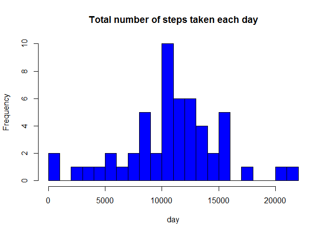
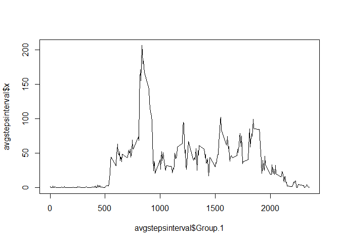
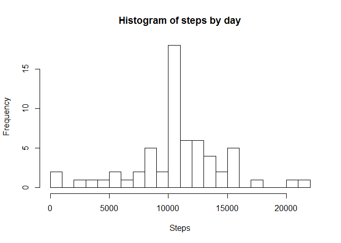
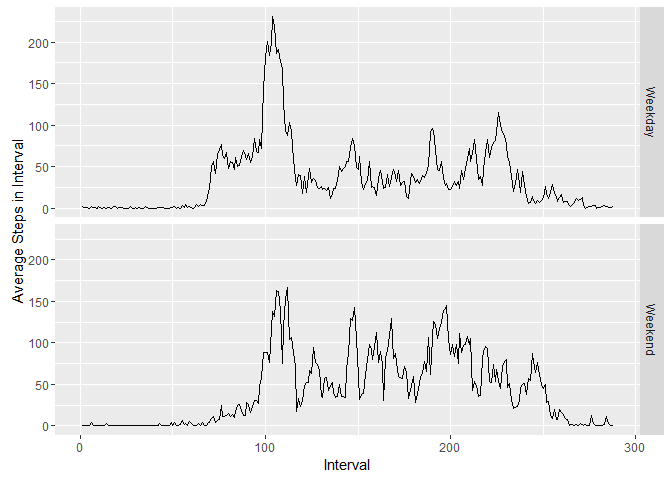

data <- read.csv("activity.csv", header=TRUE, sep=",")newdata <- na.omit(data)
avg <- data.frame(aggregate(newdata$steps, by=list(newdata$date), FUN = mean))
sum <- data.frame(aggregate(newdata$steps, by=list(newdata$date), FUN = sum))
median <- data.frame(aggregate(newdata$steps, by=list(newdata$date), FUN = median))hist(sum$x, main="Total number of steps taken each day", xlab= "day", col=c("blue"), breaks=20) #### Mean and Median
mean(sum$x)## [1] 10766.19median(sum$x)## [1] 10765avgstepsinterval <- data.frame(aggregate(newdata$steps, by=list(newdata$interval), FUN = mean))plot(avgstepsinterval$Group.1, avgstepsinterval$x, type="l")
avgstepsinterval$Group.1[which.max(avgstepsinterval$x)]## [1] 835new=data
for (row in 1:length(new$steps)){
if(is.na(new[row,1])){
new[row,1]=avgstepsinterval[avgstepsinterval$Group.1==new[row,3],2]
}
}
newagg=aggregate(new$steps,by=list(new$date),FUN=sum)
hist(newagg$x,breaks=20,labels=unique(newagg$x[order(newagg$x)]),main="Histogram of steps by day",xlab="Steps")
mean(newagg$x)## [1] 10766.19median(newagg$x)## [1] 10766.19new$date <- as.Date(new$date)
new$dayOfWeek=weekdays(new$date)
new$daytype=ifelse(new$dayOfWeek=="sabato"|new$dayOfWeek=="domenica","Weekend","Weekday")
new$daytype=as.factor(new$daytype)
new$interval=as.factor(new$interval)library(ggplot2)
lastagg=aggregate(new$steps,list(as.factor(new$interval),as.factor(new$daytype)),mean)
plot <- ggplot(lastagg, aes(x = as.integer(Group.1), y=x)) + geom_line()
plot + facet_grid(Group.2~.)+xlab("Interval")+ylab("Average Steps in Interval")